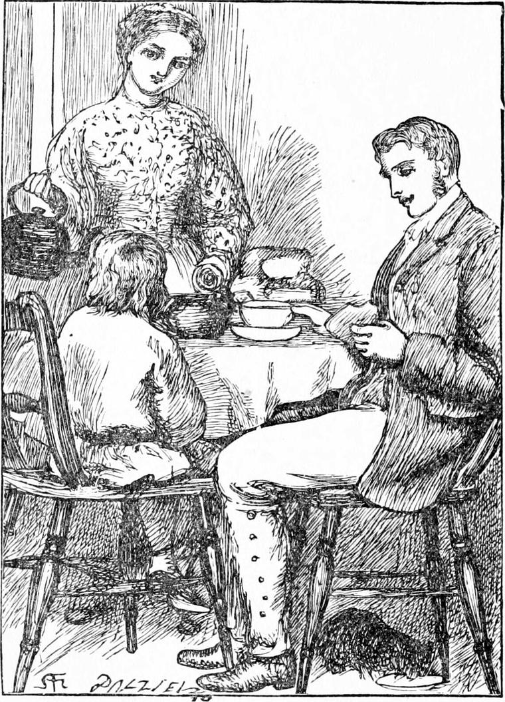
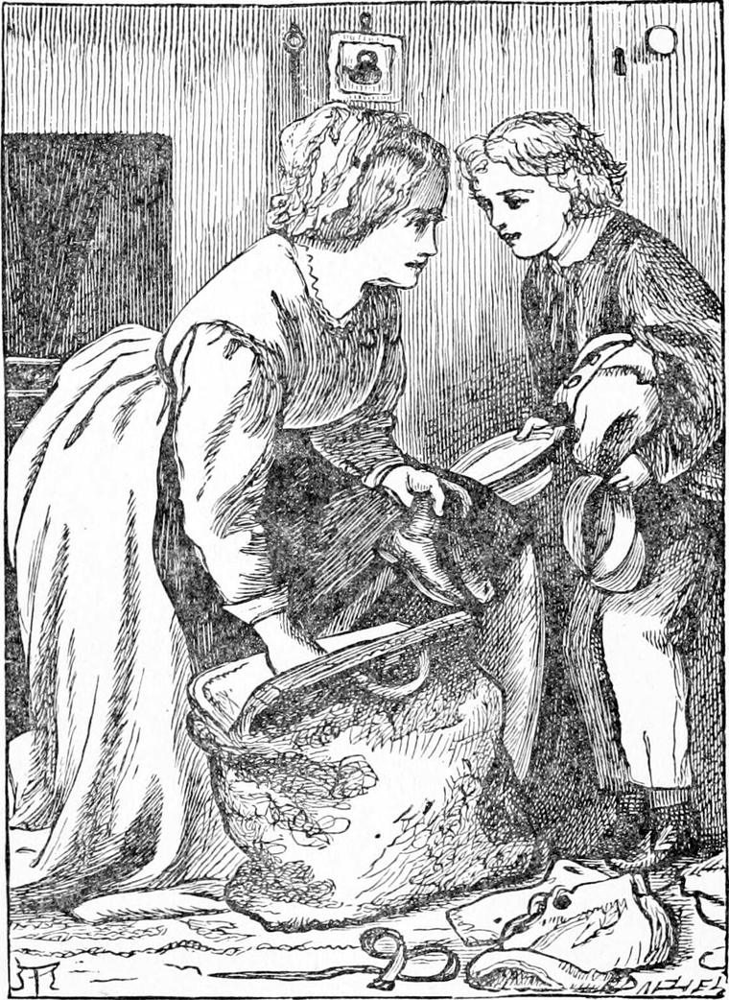
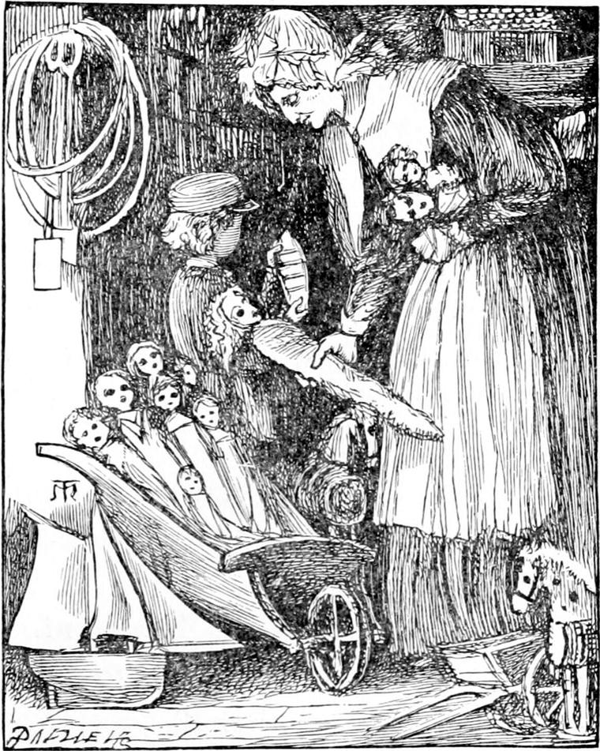
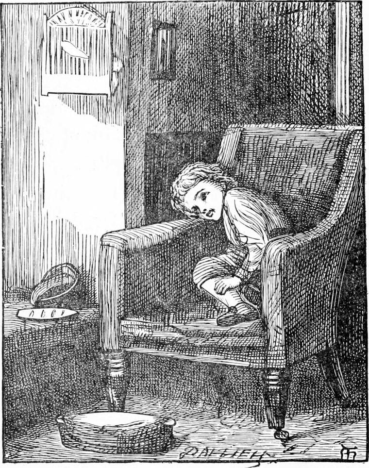

WHEN Diamond went home to breakfast, he found his father and mother already seated at the table. They were both busy with their bread and butter, and Diamond sat himself down in his usual place. His mother looked up at him, and, after watching him for a moment, said:
“I don't think the boy is looking well, husband.”
“Don't you? Well, I don't know. I think he looks pretty bobbish. How do you feel yourself, Diamond, my boy?”
“Quite well, thank you, father; at least, I think I've got a little headache.”
“There! I told you,” said his father and mother both at once.
“The child's very poorly” added his mother.
“The child's quite well,” added his father.
And then they both laughed.
“You see,” said his mother, “I've had a letter from my sister at Sandwich.”
“Sleepy old hole!” said his father.
“Don't abuse the place; there's good people in it,” said his mother.
“Right, old lady,” returned his father; “only I don't believe there are more than two pair of carriage-horses in the whole blessed place.”
“Well, people can get to heaven without carriages—or coachmen either, husband. Not that I should like to go without my coachman, you know. But about the boy?”

“What boy?”
“That boy, there, staring at you with his goggle-eyes.”
“Have I got goggle-eyes, mother?” asked Diamond, a little dismayed.
“Not too goggle,” said his mother, who was quite proud of her boy's eyes, only did not want to make him vain.
“Not too goggle; only you need not stare so.”
“Well, what about him?” said his father.
“I told you I had got a letter.”
“Yes, from your sister; not from Diamond.”
“La, husband! you've got out of bed the wrong leg first this morning, I do believe.”
“I always get out with both at once,” said his father, laughing.
“Well, listen then. His aunt wants the boy to go down and see her.”
“And that's why you want to make out that he ain't looking well.”
“No more he is. I think he had better go.”
“Well, I don't care, if you can find the money,” said his father.
“I'll manage that,” said his mother; and so it was agreed that Diamond should go to Sandwich.
I will not describe the preparations Diamond made. You would have thought he had been going on a three months' voyage. Nor will I describe the journey, for our business is now at the place. He was met at the station by his aunt, a cheerful middle-aged woman, and conveyed in safety to the sleepy old town, as his father called it. And no wonder that it was sleepy, for it was nearly dead of old age.
Diamond went about staring with his beautiful goggle-eyes, at the quaint old streets, and the shops, and the houses. Everything looked very strange, indeed; for here was a town abandoned by its nurse, the sea, like an old oyster left on the shore till it gaped for weariness. It used to be one of the five chief seaports in England, but it began to hold itself too high, and the consequence was the sea grew less and less intimate with it, gradually drew back, and kept more to itself, till at length it left it high and dry: Sandwich was a seaport no more; the sea went on with its own tide-business a long way off, and forgot it. Of course it went to sleep, and had no more to do with ships. That's what comes to cities and nations, and boys and girls, who say, “I can do without your help. I'm enough for myself.”
Diamond soon made great friends with an old woman who kept a toyshop, for his mother had given him twopence for pocket-money before he left, and he had gone into her shop to spend it, and she got talking to him. She looked very funny, because she had not got any teeth, but Diamond liked her, and went often to her shop, although he had nothing to spend there after the twopence was gone.

One afternoon he had been wandering rather wearily about the streets for some time. It was a hot day, and he felt tired. As he passed the toyshop, he stepped in.
“Please may I sit down for a minute on this box?” he said, thinking the old woman was somewhere in the shop. But he got no answer, and sat down without one. Around him were a great many toys of all prices, from a penny up to shillings. All at once he heard a gentle whirring somewhere amongst them. It made him start and look behind him. There were the sails of a windmill going round and round almost close to his ear. He thought at first it must be one of those toys which are wound up and go with clockwork; but no, it was a common penny toy, with the windmill at the end of a whistle, and when the whistle blows the windmill goes. But the wonder was that there was no one at the whistle end blowing, and yet the sails were turning round and round—now faster, now slower, now faster again.

“What can it mean?” said Diamond, aloud.
“It means me,” said the tiniest voice he had ever heard.
“Who are you, please?” asked Diamond.
“Well, really, I begin to be ashamed of you,” said the voice. “I wonder how long it will be before you know me; or how often I might take you in before you got sharp enough to suspect me. You are as bad as a baby that doesn't know his mother in a new bonnet.”
“Not quite so bad as that, dear North Wind,” said Diamond, “for I didn't see you at all, and indeed I don't see you yet, although I recognise your voice. Do grow a little, please.”
“Not a hair's-breadth,” said the voice, and it was the smallest voice that ever spoke. “What are you doing here?”
“I am come to see my aunt. But, please, North Wind, why didn't you come back for me in the church that night?”
“I did. I carried you safe home. All the time you were dreaming about the glass Apostles, you were lying in my arms.”
“I'm so glad,” said Diamond. “I thought that must be it, only I wanted to hear you say so. Did you sink the ship, then?”
“Yes.”
“And drown everybody?”
“Not quite. One boat got away with six or seven men in it.”
“How could the boat swim when the ship couldn't?”
“Of course I had some trouble with it. I had to contrive a bit, and manage the waves a little. When they're once thoroughly waked up, I have a good deal of trouble with them sometimes. They're apt to get stupid with tumbling over each other's heads. That's when they're fairly at it. However, the boat got to a desert island before noon next day.”
“And what good will come of that?”
“I don't know. I obeyed orders. Good bye.”
“Oh! stay, North Wind, do stay!” cried Diamond, dismayed to see the windmill get slower and slower.
“What is it, my dear child?” said North Wind, and the windmill began turning again so swiftly that Diamond could scarcely see it. “What a big voice you've got! and what a noise you do make with it? What is it you want? I have little to do, but that little must be done.”
“I want you to take me to the country at the back of the north wind.”
“That's not so easy,” said North Wind, and was silent for so long that Diamond thought she was gone indeed. But after he had quite given her up, the voice began again.
“I almost wish old Herodotus had held his tongue about it. Much he knew of it!”
“Why do you wish that, North Wind?”
“Because then that clergyman would never have heard of it, and set you wanting to go. But we shall see. We shall see. You must go home now, my dear, for you don't seem very well, and I'll see what can be done for you. Don't wait for me. I've got to break a few of old Goody's toys; she's thinking too much of her new stock. Two or three will do. There! go now.”
Diamond rose, quite sorry, and without a word left the shop, and went home.
It soon appeared that his mother had been right about him, for that same afternoon his head began to ache very much, and he had to go to bed.
He awoke in the middle of the night. The lattice window of his room had blown open, and the curtains of his little bed were swinging about in the wind.
“If that should be North Wind now!” thought Diamond.
But the next moment he heard some one closing the window, and his aunt came to his bedside. She put her hand on his face, and said—
“How's your head, dear?”
“Better, auntie, I think.”
“Would you like something to drink?”
“Oh, yes! I should, please.”
So his aunt gave him some lemonade, for she had been used to nursing sick people, and Diamond felt very much refreshed, and laid his head down again to go very fast asleep, as he thought. And so he did, but only to come awake again, as a fresh burst of wind blew the lattice open a second time. The same moment he found himself in a cloud of North Wind's hair, with her beautiful face, set in it like a moon, bending over him.
“Quick, Diamond!” she said. “I have found such a chance!”
“But I'm not well,” said Diamond.
“I know that, but you will be better for a little fresh air. You shall have plenty of that.”
“You want me to go, then?”
“Yes, I do. It won't hurt you.”
“Very well,” said Diamond; and getting out of the bed-clothes, he jumped into North Wind's arms.
“We must make haste before your aunt comes,” said she, as she glided out of the open lattice and left it swinging.
The moment Diamond felt her arms fold around him he began to feel better. It was a moonless night, and very dark, with glimpses of stars when the clouds parted.
“I used to dash the waves about here,” said North Wind, “where cows and sheep are feeding now; but we shall soon get to them. There they are.”
And Diamond, looking down, saw the white glimmer of breaking water far below him.
“You see, Diamond,” said North Wind, “it is very difficult for me to get you to the back of the north wind, for that country lies in the very north itself, and of course I can't blow northwards.”
“Why not?” asked Diamond.
“You little silly!” said North Wind. “Don't you see that if I were to blow northwards I should be South Wind, and that is as much as to say that one person could be two persons?”
“But how can you ever get home at all, then?”
“You are quite right—that is my home, though I never get farther than the outer door. I sit on the doorstep, and hear the voices inside. I am nobody there, Diamond.”
“I'm very sorry.”
“Why?”
“That you should be nobody.”
“Oh, I don't mind it. Dear little man! you will be very glad some day to be nobody yourself. But you can't understand that now, and you had better not try; for if you do, you will be certain to go fancying some egregious nonsense, and making yourself miserable about it.”
“Then I won't,” said Diamond.
“There's a good boy. It will all come in good time.”
“But you haven't told me how you get to the doorstep, you know.”
“It is easy enough for me. I have only to consent to be nobody, and there I am. I draw into myself and there I am on the doorstep. But you can easily see, or you have less sense than I think, that to drag you, you heavy thing, along with me, would take centuries, and I could not give the time to it.”
“Oh, I'm so sorry!” said Diamond.
“What for now, pet?”
“That I'm so heavy for you. I would be lighter if I could, but I don't know how.”
“You silly darling! Why, I could toss you a hundred miles from me if I liked. It is only when I am going home that I shall find you heavy.”
“Then you are going home with me?”
“Of course. Did I not come to fetch you just for that?”
“But all this time you must be going southwards.”
“Yes. Of course I am.”
“How can you be taking me northwards, then?”
“A very sensible question. But you shall see. I will get rid of a few of these clouds—only they do come up so fast! It's like trying to blow a brook dry. There! What do you see now?”
“I think I see a little boat, away there, down below.”
“A little boat, indeed! Well! She's a yacht of two hundred tons; and the captain of it is a friend of mine; for he is a man of good sense, and can sail his craft well. I've helped him many a time when he little thought it. I've heard him grumbling at me, when I was doing the very best I could for him. Why, I've carried him eighty miles a day, again and again, right north.”
“He must have dodged for that,” said Diamond, who had been watching the vessels, and had seen that they went other ways than the wind blew.
“Of course he must. But don't you see, it was the best I could do? I couldn't be South Wind. And besides it gave him a share in the business. It is not good at all—mind that, Diamond—to do everything for those you love, and not give them a share in the doing. It's not kind. It's making too much of yourself, my child. If I had been South Wind, he would only have smoked his pipe all day, and made himself stupid.”
“But how could he be a man of sense and grumble at you when you were doing your best for him?”
“Oh! you must make allowances,” said North Wind, “or you will never do justice to anybody.—You do understand, then, that a captain may sail north——”
“In spite of a north wind—yes,” supplemented Diamond.
“Now, I do think you must be stupid, my dear” said North Wind. “Suppose the north wind did not blow where would he be then?”
“Why then the south wind would carry him.”
“So you think that when the north wind stops the south wind blows. Nonsense. If I didn't blow, the captain couldn't sail his eighty miles a day. No doubt South Wind would carry him faster, but South Wind is sitting on her doorstep then, and if I stopped there would be a dead calm. So you are all wrong to say he can sail north in spite of me; he sails north by my help, and my help alone. You see that, Diamond?”

“Yes, I do, North Wind. I am stupid, but I don't want to be stupid.”
“Good boy! I am going to blow you north in that little craft, one of the finest that ever sailed the sea. Here we are, right over it. I shall be blowing against you; you will be sailing against me; and all will be just as we want it. The captain won't get on so fast as he would like, but he will get on, and so shall we. I'm just going to put you on board. Do you see in front of the tiller—that thing the man is working, now to one side, now to the other—a round thing like the top of a drum?”
“Yes,” said Diamond.
“Below that is where they keep their spare sails, and some stores of that sort. I am going to blow that cover off. The same moment I will drop you on deck, and you must tumble in. Don't be afraid, it is of no depth, and you will fall on sail-cloth. You will find it nice and warm and dry-only dark; and you will know I am near you by every roll and pitch of the vessel. Coil yourself up and go to sleep. The yacht shall be my cradle and you shall be my baby.”
“Thank you, dear North Wind. I am not a bit afraid,” said Diamond.
In a moment they were on a level with the bulwarks, and North Wind sent the hatch of the after-store rattling away over the deck to leeward. The next, Diamond found himself in the dark, for he had tumbled through the hole as North Wind had told him, and the cover was replaced over his head. Away he went rolling to leeward, for the wind began all at once to blow hard. He heard the call of the captain, and the loud trampling of the men over his head, as they hauled at the main sheet to get the boom on board that they might take in a reef in the mainsail. Diamond felt about until he had found what seemed the most comfortable place, and there he snuggled down and lay.
Hours after hours, a great many of them, went by; and still Diamond lay there. He never felt in the least tired or impatient, for a strange pleasure filled his heart. The straining of the masts, the creaking of the boom, the singing of the ropes, the banging of the blocks as they put the vessel about, all fell in with the roaring of the wind above, the surge of the waves past her sides, and the thud with which every now and then one would strike her; while through it all Diamond could hear the gurgling, rippling, talking flow of the water against her planks, as she slipped through it, lying now on this side, now on that—like a subdued air running through the grand music his North Wind was making about him to keep him from tiring as they sped on towards the country at the back of her doorstep.
How long this lasted Diamond had no idea. He seemed to fall asleep sometimes, only through the sleep he heard the sounds going on. At length the weather seemed to get worse. The confusion and trampling of feet grew more frequent over his head; the vessel lay over more and more on her side, and went roaring through the waves, which banged and thumped at her as if in anger. All at once arose a terrible uproar. The hatch was blown off; a cold fierce wind swept in upon him; and a long arm came with it which laid hold of him and lifted him out. The same moment he saw the little vessel far below him righting herself. She had taken in all her sails and lay now tossing on the waves like a sea-bird with folded wings. A short distance to the south lay a much larger vessel, with two or three sails set, and towards it North Wind was carrying Diamond. It was a German ship, on its way to the North Pole.
“That vessel down there will give us a lift now,” said North Wind; “and after that I must do the best I can.”
She managed to hide him amongst the flags of the big ship, which were all snugly stowed away, and on and on they sped towards the north. At length one night she whispered in his ear, “Come on deck, Diamond;” and he got up at once and crept on deck. Everything looked very strange. Here and there on all sides were huge masses of floating ice, looking like cathedrals, and castles, and crags, while away beyond was a blue sea.
“Is the sun rising or setting?” asked Diamond.
“Neither or both, which you please. I can hardly tell which myself. If he is setting now, he will be rising the next moment.”
“What a strange light it is!” said Diamond. “I have heard that the sun doesn't go to bed all the summer in these parts. Miss Coleman told me that. I suppose he feels very sleepy, and that is why the light he sends out looks so like a dream.”
“That will account for it well enough for all practical purposes,” said North Wind.
Some of the icebergs were drifting northwards; one was passing very near the ship. North Wind seized Diamond, and with a single bound lighted on one of them—a huge thing, with sharp pinnacles and great clefts. The same instant a wind began to blow from the south. North Wind hurried Diamond down the north side of the iceberg, stepping by its jags and splintering; for this berg had never got far enough south to be melted and smoothed by the summer sun. She brought him to a cave near the water, where she entered, and, letting Diamond go, sat down as if weary on a ledge of ice.
Diamond seated himself on the other side, and for a while was enraptured with the colour of the air inside the cave. It was a deep, dazzling, lovely blue, deeper than the deepest blue of the sky. The blue seemed to be in constant motion, like the blackness when you press your eyeballs with your fingers, boiling and sparkling. But when he looked across to North Wind he was frightened; her face was worn and livid.
“What is the matter with you, dear North Wind?” he said.
“Nothing much. I feel very faint. But you mustn't mind it, for I can bear it quite well. South Wind always blows me faint. If it were not for the cool of the thick ice between me and her, I should faint altogether. Indeed, as it is, I fear I must vanish.”
Diamond stared at her in terror, for he saw that her form and face were growing, not small, but transparent, like something dissolving, not in water, but in light. He could see the side of the blue cave through her very heart. And she melted away till all that was left was a pale face, like the moon in the morning, with two great lucid eyes in it.
“I am going, Diamond,” she said.
“Does it hurt you?” asked Diamond.
“It's very uncomfortable,” she answered; “but I don't mind it, for I shall come all right again before long. I thought I should be able to go with you all the way, but I cannot. You must not be frightened though. Just go straight on, and you will come all right. You'll find me on the doorstep.”
As she spoke, her face too faded quite away, only Diamond thought he could still see her eyes shining through the blue. When he went closer, however, he found that what he thought her eyes were only two hollows in the ice. North Wind was quite gone; and Diamond would have cried, if he had not trusted her so thoroughly. So he sat still in the blue air of the cavern listening to the wash and ripple of the water all about the base of the iceberg, as it sped on and on into the open sea northwards. It was an excellent craft to go with the current, for there was twice as much of it below water as above. But a light south wind was blowing too, and so it went fast.
After a little while Diamond went out and sat on the edge of his floating island, and looked down into the ocean beneath him. The white sides of the berg reflected so much light below the water, that he could see far down into the green abyss. Sometimes he fancied he saw the eyes of North Wind looking up at him from below, but the fancy never lasted beyond the moment of its birth. And the time passed he did not know how, for he felt as if he were in a dream. When he got tired of the green water, he went into the blue cave; and when he got tired of the blue cave he went out and gazed all about him on the blue sea, ever sparkling in the sun, which kept wheeling about the sky, never going below the horizon. But he chiefly gazed northwards, to see whether any land were appearing. All this time he never wanted to eat. He broke off little bits of the berg now and then and sucked them, and he thought them very nice.
At length, one time he came out of his cave, he spied far off on the horizon, a shining peak that rose into the sky like the top of some tremendous iceberg; and his vessel was bearing him straight towards it. As it went on the peak rose and rose higher and higher above the horizon; and other peaks rose after it, with sharp edges and jagged ridges connecting them. Diamond thought this must be the place he was going to; and he was right; for the mountains rose and rose, till he saw the line of the coast at their feet and at length the iceberg drove into a little bay, all around which were lofty precipices with snow on their tops, and streaks of ice down their sides. The berg floated slowly up to a projecting rock. Diamond stepped on shore, and without looking behind him began to follow a natural path which led windingly towards the top of the precipice.
When he reached it, he found himself on a broad table of ice, along which he could walk without much difficulty. Before him, at a considerable distance, rose a lofty ridge of ice, which shot up into fantastic pinnacles and towers and battlements. The air was very cold, and seemed somehow dead, for there was not the slightest breath of wind.
In the centre of the ridge before him appeared a gap like the opening of a valley. But as he walked towards it, gazing, and wondering whether that could be the way he had to take, he saw that what had appeared a gap was the form of a woman seated against the ice front of the ridge, leaning forwards with her hands in her lap, and her hair hanging down to the ground.
“It is North Wind on her doorstep,” said Diamond joyfully, and hurried on.
He soon came up to the place, and there the form sat, like one of the great figures at the door of an Egyptian temple, motionless, with drooping arms and head. Then Diamond grew frightened, because she did not move nor speak. He was sure it was North Wind, but he thought she must be dead at last. Her face was white as the snow, her eyes were blue as the air in the ice-cave, and her hair hung down straight, like icicles. She had on a greenish robe, like the colour in the hollows of a glacier seen from far off.
He stood up before her, and gazed fearfully into her face for a few minutes before he ventured to speak. At length, with a great effort and a trembling voice, he faltered out—
“North Wind!”
“Well, child?” said the form, without lifting its head.
“Are you ill, dear North Wind?”
“No. I am waiting.”
“What for?”
“Till I'm wanted.”
“You don't care for me any more,” said Diamond, almost crying now.
“Yes I do. Only I can't show it. All my love is down at the bottom of my heart. But I feel it bubbling there.”
“What do you want me to do next, dear North Wind?” said Diamond, wishing to show his love by being obedient.
“What do you want to do yourself?”
“I want to go into the country at your back.”
“Then you must go through me.”
“I don't know what you mean.”
“I mean just what I say. You must walk on as if I were an open door, and go right through me.”
“But that will hurt you.”
“Not in the least. It will hurt you, though.”
“I don't mind that, if you tell me to do it.”
“Do it,” said North Wind.
Diamond walked towards her instantly. When he reached her knees, he put out his hand to lay it on her, but nothing was there save an intense cold. He walked on. Then all grew white about him; and the cold stung him like fire. He walked on still, groping through the whiteness. It thickened about him. At last, it got into his heart, and he lost all sense. I would say that he fainted—only whereas in common faints all grows black about you, he felt swallowed up in whiteness. It was when he reached North Wind's heart that he fainted and fell. But as he fell, he rolled over the threshold, and it was thus that Diamond got to the back of the north wind.